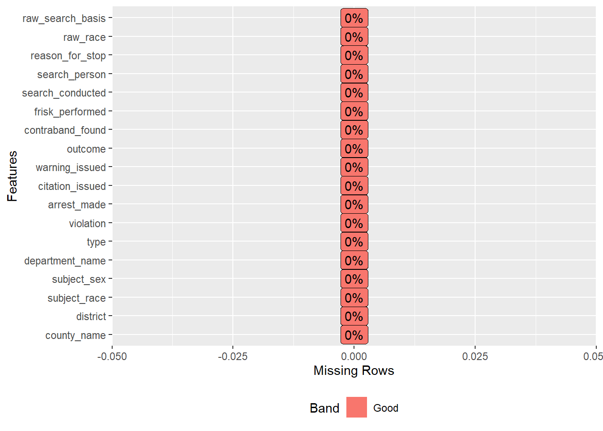
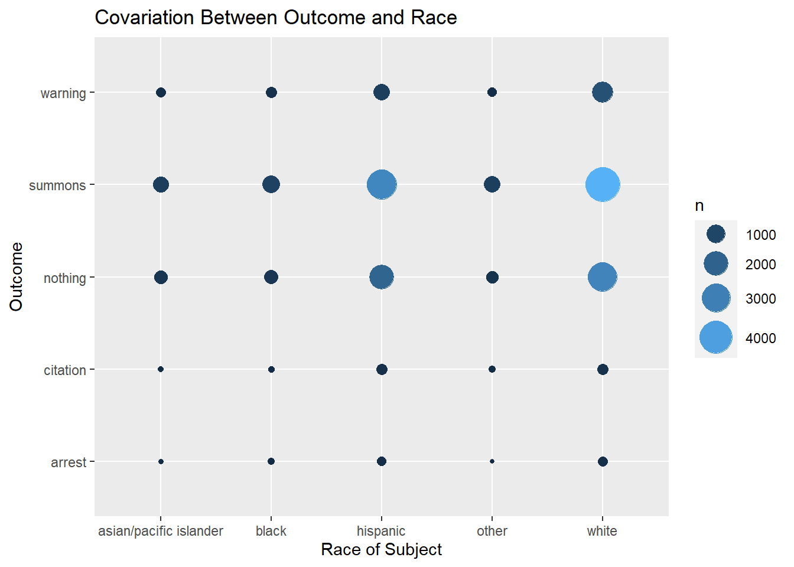
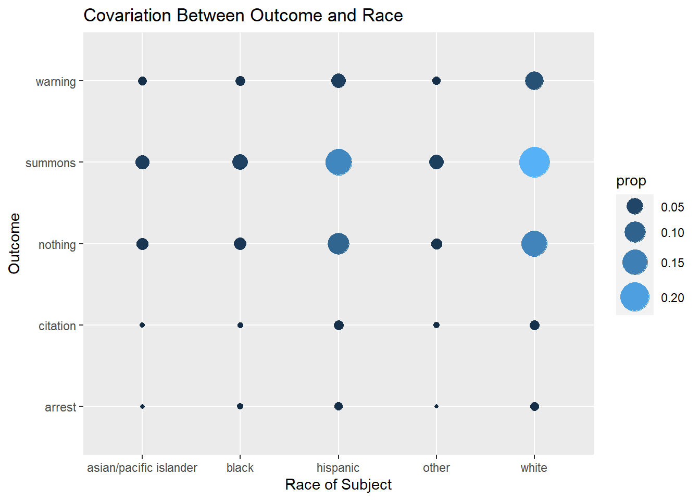
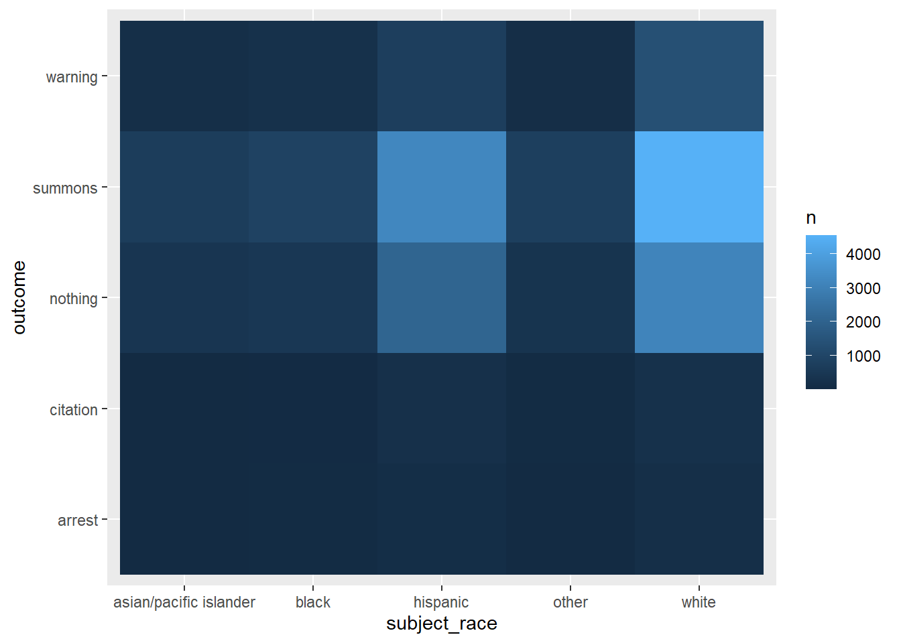
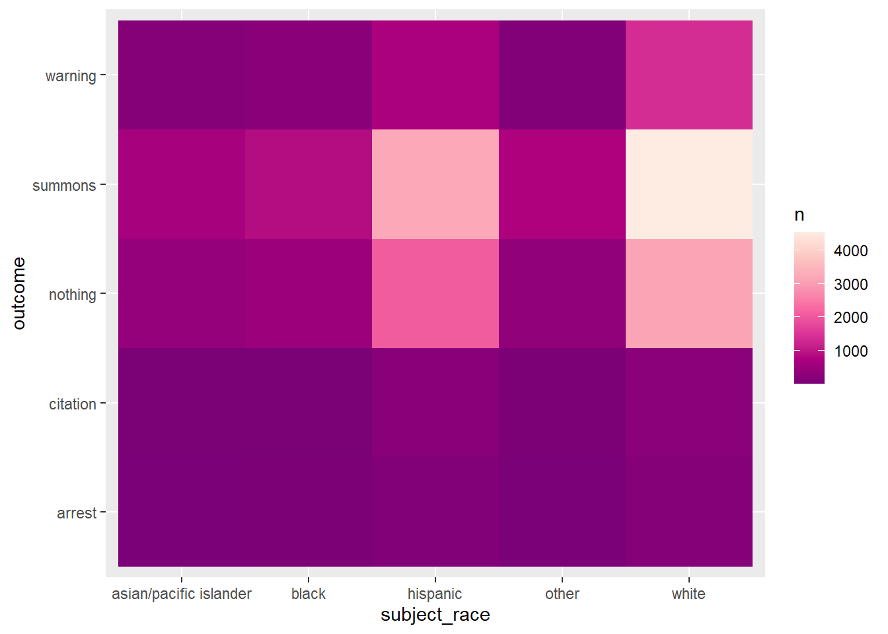
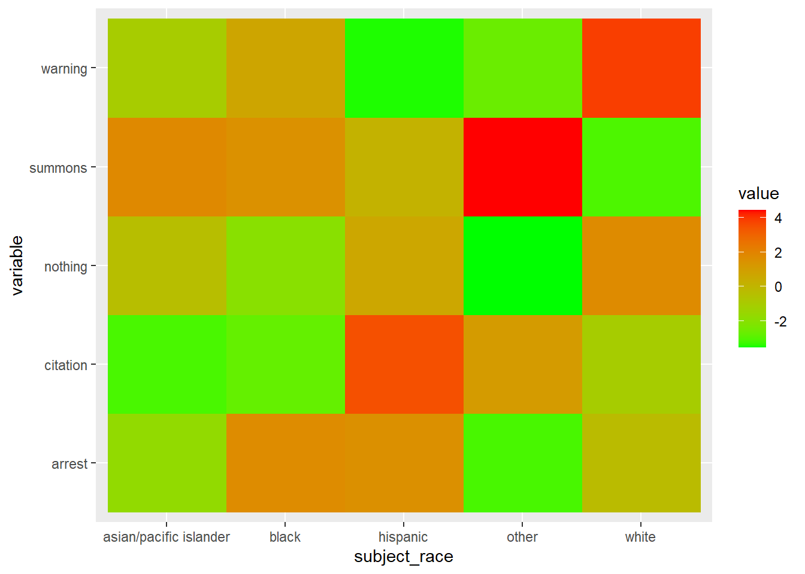
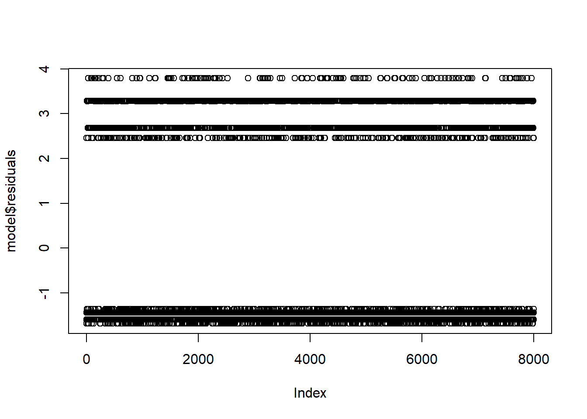

library(tidyverse)
library(RSQLite)
library(dbplyr)
library(readr)
library(DBI)
library(devtools)
library(inborutils) # for large files
library(rio)
library(knitr)
library(broom)
library(performance)
library(data.table)# shouldn't need this after writing to SQLite db
# Ideas for larger DB in csv: bigmatrix package
# dat <- readRDS("C:/Users/Chris/OneDrive/R project/Open Policing/yg821jf8611_ca_statewide_2020_04_01.rds")This is my first time encountering a large dataset (3 million rows). After much stumbling in the dark and many articles I’ve linked the file to a SQLite database, made an object that is a subset of the file (20,000 rows) for initial analysis, then saved it as an RDS object that isn’t so big.
# Ok SQLite does not have a storage class for dates or times, but it seems reasonably fast
library(dplyr)
#The code below should only need to be done once:
#file_name <- "California_Policing"
# sqldb <- dbConnect(SQLite(), dbname = file_name)
# Writing
# dbWriteTable(sqldb, name = "Calfornia_Statewide_Policing", dat, row.names = FALSE, overwrite = TRUE, append = FALSE, field.types = NULL)
# Reading, only need to do once. Taking the first 20,000 rows.
#df <- tbl(sqldb, "Calfornia_Statewide_Policing") %>%
# select(-date, -raw_row_number) %>%
# filter(row_number() %in% c(1:20000)) %>%
# collect()
# saving it as a RDS file for future use
# saveRDS(df,"C:/Users/Chris/OneDrive/R project/Open Policing/Open Policing/df.rds")
# Ok this is our regular working object for now: 20,000 rows out of 3 million to work with
df <- readRDS("C:/Users/Chris/OneDrive/R project/Open Policing/Open Policing/df.rds")
# dbBegin(db) begins a transaction
# dbRollback(db) roll back reverts to original state
# dbCommit(db) 'commits' the data# Tidbit for future use
#The code below is an example for if you need to copy data over into a database:
#copy_to(con, nycflights13::flights, "flights",
# temporary = FALSE,
# indexes = list(
# c("year", "month", "day"),
# "carrier",
# "tailnum",
# "dest"
# )
#)library(DataExplorer)Going to use glimpse on the data to get a look at the data. Glimpse reveals various location, vehicle, warning, and race information. Our variables are mostly categorical, with a lot of NA’s that I might want to replace with 0’s.
glimpse(df)## Rows: 20,000
## Columns: 19
## $ county_name <chr> "Stanislaus County", "Stanislaus County", "Stanislaus County", "Stanislaus County", "Stanislaus County", "Stanislaus ~
## $ district <chr> "Modesto", "Modesto", "Modesto", "Modesto", "Modesto", "Modesto", "Modesto", "Modesto", "Modesto", "Modesto", "Modest~
## $ subject_race <chr> "other", "hispanic", "hispanic", "white", "hispanic", "hispanic", "hispanic", "other", "hispanic", "white", "hispanic~
## $ subject_sex <chr> "male", "female", "female", "female", "male", "male", "female", "female", "male", "female", "male", "female", "male",~
## $ department_name <chr> "California Highway Patrol", "California Highway Patrol", "California Highway Patrol", "California Highway Patrol", "~
## $ type <chr> "vehicular", "vehicular", "vehicular", "vehicular", "vehicular", "vehicular", "vehicular", "vehicular", "vehicular", ~
## $ violation <chr> "Motorist / Public Service", "Moving Violation (VC)", "Moving Violation (VC)", "Moving Violation (VC)", "Moving Viola~
## $ arrest_made <int> NA, 0, 0, 0, 0, 0, 0, 0, 0, 0, 0, 0, 0, 0, 0, 0, NA, NA, NA, NA, 0, 0, NA, 0, NA, 0, 0, NA, 0, 0, 0, NA, NA, NA, NA, ~
## $ citation_issued <int> NA, 0, 0, 0, 0, 0, 0, 0, 0, 0, 0, 0, 0, 0, 0, 0, NA, NA, NA, NA, 1, 0, NA, 0, NA, 1, 1, NA, 0, 0, 0, NA, NA, NA, NA, ~
## $ warning_issued <int> NA, 0, 0, 0, 0, 0, 0, 0, 0, 1, 0, 0, 1, 0, 0, 0, NA, NA, NA, NA, 0, 0, NA, 0, NA, 0, 0, NA, 1, 1, 1, NA, NA, NA, NA, ~
## $ outcome <chr> NA, "summons", "summons", "summons", "summons", "summons", "summons", "summons", "summons", "warning", "summons", "su~
## $ contraband_found <int> NA, NA, NA, NA, NA, NA, NA, NA, NA, NA, NA, NA, NA, NA, NA, NA, NA, NA, NA, NA, NA, NA, NA, NA, NA, NA, NA, NA, NA, N~
## $ frisk_performed <int> NA, NA, NA, NA, NA, NA, NA, NA, NA, NA, NA, NA, NA, NA, NA, NA, NA, NA, NA, NA, NA, NA, NA, NA, NA, NA, NA, NA, NA, N~
## $ search_conducted <int> 0, 0, 1, 0, 1, 0, 0, 0, 0, 0, 0, 0, 0, 0, 0, 0, 0, 0, 0, 0, 0, 0, 0, 0, 0, 0, 0, 0, 0, 0, 0, 0, 0, 0, 0, 0, 0, 0, 0, ~
## $ search_person <int> 0, 0, NA, 0, NA, 0, 0, 0, 0, 0, 0, 0, 0, 0, 0, 0, 0, 0, 0, 0, 0, 0, 0, 0, 0, 0, 0, 0, 0, 0, 0, 0, 0, 0, 0, 0, 0, 0, 0~
## $ search_basis <chr> NA, NA, "other", NA, "other", NA, NA, NA, NA, NA, NA, NA, NA, NA, NA, NA, NA, NA, NA, NA, NA, NA, NA, NA, NA, NA, NA,~
## $ reason_for_stop <chr> "Motorist / Public Service", "Moving Violation (VC)", "Moving Violation (VC)", "Moving Violation (VC)", "Moving Viola~
## $ raw_race <chr> "Other", "Hispanic", "Hispanic", "White", "Hispanic", "Hispanic", "Hispanic", "Other", "Hispanic", "White", "Hispanic~
## $ raw_search_basis <chr> "Vehicle Inventory", "Probable Cause (positive)", "Probable Cause (positive)", "Probable Cause (positive)", "Probable~# This is unused but it's nice to know the way to find date range
#dat %>%
# select(date) %>%
# summarise(date_range = max(date) - min(date))plot_str(df)I’m not sure how nice this graph looks to be honest - will probably delete.
introduce(df)## # A tibble: 1 x 9
## rows columns discrete_columns continuous_columns all_missing_columns total_missing_values complete_rows total_observations memory_usage
## <int> <int> <int> <int> <int> <int> <int> <int> <dbl>
## 1 20000 19 12 7 0 85795 0 380000 2501040Introduce is very useful, it’s telling me that there are a lot of missing values. The memory usage is in byes which is 2.5MB. Perhaps I could select more than 20,000 rows.
plot_missing(df)Whilst the NA’s in district, county_name and search_person seem to be genuine missing data, the other variables seem to be using NA as a geuine outcome. Let’s take a look at these columns:
df %>% select(outcome, warning_issued, citation_issued, arrest_made, search_basis, contraband_found, frisk_performed) %>%
distinct()## # A tibble: 19 x 7
## outcome warning_issued citation_issued arrest_made search_basis contraband_found frisk_performed
## <chr> <int> <int> <int> <chr> <int> <int>
## 1 <NA> NA NA NA <NA> NA NA
## 2 summons 0 0 0 <NA> NA NA
## 3 summons 0 0 0 other NA NA
## 4 warning 1 0 0 <NA> NA NA
## 5 citation 0 1 0 <NA> NA NA
## 6 arrest 0 0 1 other NA NA
## 7 <NA> NA NA NA other NA NA
## 8 arrest 0 0 1 <NA> NA NA
## 9 <NA> NA NA NA other NA 1
## 10 summons 0 0 0 other NA 1
## 11 summons 0 0 0 probable cause 1 NA
## 12 citation 0 1 0 other NA NA
## 13 warning 1 0 0 other NA NA
## 14 summons 0 0 0 probable cause 0 NA
## 15 arrest 0 0 1 consent 1 NA
## 16 arrest 0 0 1 probable cause 1 NA
## 17 warning 1 0 0 probable cause 1 NA
## 18 <NA> NA NA NA probable cause 0 NA
## 19 arrest 0 0 1 probable cause 0 NAThe frisk_performed column has only NA’s and 1’s. We can treat the NA’s as 0 i.e no frisk performed. arrest_made, citation_issued, warning_issued, outcome tend to have NA’s together for a row. I believe it is a reasonable assumption that nothing occured during these pull overs. Therefore we can replace these NA’s with 0’s. The search_basis is giving us ‘other’ or NA, so we should probably remove this column. Search_person can also replace NA’s with 0’s.
# Modifying all these NA entries:
df <- df %>%
replace_na(list(outcome = "nothing", warning_issued = 0, arrest_made = 0, citation_issued = 0, warning_issued = 0, contraband_found = 0, frisk_performed = 0, search_conducted = 0 )) %>%
select(-search_basis)
df <- df %>% replace_na(list(search_person = 0))plot_missing(df)The district and county_name entries with NA entries can be treated as unusable data, we can remove them.
df <- df %>%
na.omit()plot_missing(df) And we’re done cleaning the NA!
library(plotly)
library(data.table)We want the numeric data only for the correlation matrix, but first we need to turn some categorical variables into numeric:
Indtest <- df %>%
group_by(subject_race,outcome) %>%
summarise(n = n()) %>%
spread(outcome, n)## `summarise()` has grouped output by 'subject_race'. You can override using the `.groups` argument.Indtest## # A tibble: 5 x 6
## # Groups: subject_race [5]
## subject_race arrest citation nothing summons warning
## <chr> <int> <int> <int> <int> <int>
## 1 asian/pacific islander 12 15 394 676 150
## 2 black 34 25 481 868 223
## 3 hispanic 115 213 2084 3232 733
## 4 other 6 40 341 759 133
## 5 white 144 231 3125 4542 1362df %>%
group_by(subject_race,outcome) %>% summarise(n = n()) %>% mutate(chisq_pval = chisq.test(n)$p.value)## `summarise()` has grouped output by 'subject_race'. You can override using the `.groups` argument.## # A tibble: 25 x 4
## # Groups: subject_race [5]
## subject_race outcome n chisq_pval
## <chr> <chr> <int> <dbl>
## 1 asian/pacific islander arrest 12 4.41e-280
## 2 asian/pacific islander citation 15 4.41e-280
## 3 asian/pacific islander nothing 394 4.41e-280
## 4 asian/pacific islander summons 676 4.41e-280
## 5 asian/pacific islander warning 150 4.41e-280
## 6 black arrest 34 0
## 7 black citation 25 0
## 8 black nothing 481 0
## 9 black summons 868 0
## 10 black warning 223 0
## # ... with 15 more rowsdf %>% distinct(subject_race)## # A tibble: 5 x 1
## subject_race
## <chr>
## 1 other
## 2 hispanic
## 3 white
## 4 black
## 5 asian/pacific islander# In the order of: asian/islander, black, hispanic, other, white
demo <- c(0.1452+0.0036, 0.0551, 0.3929, 0.0368, 0.3664)
# Numbers are taken from https://en.wikipedia.org/wiki/Demographics_of_California#/media/File:Ethic_California_Organized_Pie.png. The other category I obtained from 1 - sum(demo).ggplot(data = df) +
geom_count(mapping = aes(x = subject_race, y = outcome, color = ..n.., size = ..n..)) +
scale_size_area() +
scale_size_continuous(range = c(1,10)) +
ggtitle("Covariation Between Outcome and Race") +
labs(x ="Race of Subject", y = "Outcome") +
guides(color = "legend")## Scale for 'size' is already present. Adding another scale for 'size', which will replace the existing scale. While this is not the most informative graph, it is interesting to note that quite few direct arrests. Most of the outcomes are summons or nothing. As one can expect, the circles are largest for the hispanic and white groups - the two groups with the largest samples. Let’s do a proportion graph:
ggplot(data = df) +
geom_count(mapping = aes(x = subject_race, y = outcome, color = ..prop.., size = ..prop.., group = 1)) +
scale_size_area() +
scale_size_continuous(range = c(1,10)) +
ggtitle("Covariation Between Outcome and Race") +
labs(x ="Race of Subject", y = "Outcome") +
guides(color = "legend")## Scale for 'size' is already present. Adding another scale for 'size', which will replace the existing scale. Show’s the same stuff, but it’s nice to know it’s easy to go between the two. We may also be interested in a heatmap version:
df %>%
count(subject_race, outcome) %>%
ggplot(aes(x = subject_race, y = outcome)) +
geom_tile(aes(fill = n))
library(hrbrthemes)
library(seriation)
nrow(unique(df %>% count(subject_race,outcome)))## [1] 25# 25
colours <- colorRampPalette(c("blue", "green", "red"))(25)
df %>%
count(subject_race, outcome) %>%
ggplot(aes(x = subject_race, y = outcome)) +
geom_tile(aes(fill = n)) +
scale_fill_distiller(palette = "RdPu") 
# theme_ipsum() moves axis labels to the side
# Other options
# scale_fill_gradient(low = "White", high = "blue")
#
# scale_fill_brewer(palette = "PRGn") # scale_fill_brewer requires factor for fill. Ok it's limited to 11 different facotrs this is better for something that is discreteSame information is displayed but it’s definitely a more visually engaging method. The larger numbers of summons +hispanic/white really pop out. #### Test of single proportion
df %>%
group_by(subject_race) %>%
summarise(n = n()) %>%
mutate(rsum = sum(n))## # A tibble: 5 x 3
## subject_race n rsum
## <chr> <int> <int>
## 1 asian/pacific islander 1247 19938
## 2 black 1631 19938
## 3 hispanic 6377 19938
## 4 other 1279 19938
## 5 white 9404 19938We can see that 1631 out of 19938 individuals pulled over were black. Wikipedia states that 5.51% of the population in CA is of black race. We can test the hypothesis that \(H_0:\) The proportion of tested black race being 0.0551 is true \(H_1:\) The proportion of tested black race being 0.0551 is not true
prop.test(1631, 19938, 0.0551, conf.level = 0.95)##
## 1-sample proportions test with continuity correction
##
## data: 1631 out of 19938, null probability 0.0551
## X-squared = 272.56, df = 1, p-value < 2.2e-16
## alternative hypothesis: true p is not equal to 0.0551
## 95 percent confidence interval:
## 0.07805494 0.08571442
## sample estimates:
## p
## 0.08180359The extremely low p-vale suggests we reject the null hypothesis. The estimated proportion is 0.081 with a 95% confidence interval (0.078, 0.085). This suggests that there is some bias towards selecting black drivers to be pulled over.
# library(broom)
df_chisq <- df %>%
group_by(subject_race,outcome) %>% # the variables you want on the conteingency table
summarise(n = n()) %>% # need the totals
mutate(proportion = n/sum(n)) %>%
select(-proportion) %>% # Oh you definitely need to get rid of proportion here so it spreads properly
spread(outcome, n) %>% # contingency table obtained! Also got proportions...and then got rid of them should make them separate
ungroup() %>% # select will not remove in a grouped tibble
select(-1) %>%
chisq.test # %>% ## `summarise()` has grouped output by 'subject_race'. You can override using the `.groups` argument. glance()## # A tibble: 0 x 0df_chisq##
## Pearson's Chi-squared test
##
## data: .
## X-squared = 138.83, df = 16, p-value < 2.2e-16Testing of association between subject_race and outcome. The p-value is less than 0.05 so we reject the null hypothesis of no association and conclude that there is a association between the row variables (race) and column variables (outcome). Let’s have a look at the expected counts:
round(as_tibble(df_chisq$expected),0)## # A tibble: 5 x 5
## arrest citation nothing summons warning
## <dbl> <dbl> <dbl> <dbl> <dbl>
## 1 19 33 402 630 163
## 2 25 43 526 824 213
## 3 99 168 2055 3223 832
## 4 20 34 412 646 167
## 5 147 247 3030 4753 1227Compare it to the actual counts in data:
df %>%
group_by(subject_race,outcome) %>% # the variables you want on the conteingency table
summarise(n = n()) %>% # need the totals
mutate(proportion = n/sum(n)) %>%
select(-proportion) %>% # Oh you definitely need to get rid of proportion here so it spreads properly
spread(outcome, n) %>% # contingency table obtained! Also got proportions...and then got rid of them should make them separate
ungroup()## `summarise()` has grouped output by 'subject_race'. You can override using the `.groups` argument.## # A tibble: 5 x 6
## subject_race arrest citation nothing summons warning
## <chr> <int> <int> <int> <int> <int>
## 1 asian/pacific islander 12 15 394 676 150
## 2 black 34 25 481 868 223
## 3 hispanic 115 213 2084 3232 733
## 4 other 6 40 341 759 133
## 5 white 144 231 3125 4542 1362And the most contributing cells to the total chi-square score:
subject_race <- c("asian/pacific islander", "black", "hispanic", "other", "white")
chisqres <- as_tibble(df_chisq$residuals) %>% add_column(subject_race, .before = 1)
chisqres## # A tibble: 5 x 6
## subject_race arrest citation nothing summons warning
## <chr> <dbl> <dbl> <dbl> <dbl> <dbl>
## 1 asian/pacific islander -1.69 -3.10 -0.391 1.82 -0.994
## 2 black 1.70 -2.73 -1.94 1.52 0.701
## 3 hispanic 1.56 3.51 0.640 0.158 -3.43
## 4 other -3.12 1.10 -3.50 4.43 -2.62
## 5 white -0.222 -1.03 1.72 -3.06 3.86The cells with the highest absolute standardized residuals contribute the most to the total chi-square score. Let’s visualise this:
ggplot(data = melt(chisqres), aes(x = subject_race,y = variable )) +
geom_raster(aes(fill = value)) +
scale_fill_gradient(low = "green", high = "red")## Warning in melt(chisqres): The melt generic in data.table has been passed a tbl_df and will attempt to redirect to the relevant reshape2 method;
## please note that reshape2 is deprecated, and this redirection is now deprecated as well. To continue using melt methods from reshape2 while
## both libraries are attached, e.g. melt.list, you can prepend the namespace like reshape2::melt(chisqres). In the next version, this warning will
## become an error.## Using subject_race as id variables It can be seen that the column black is strongly associated with summons/arrest/warning but not strongly associated with nothing and citation.
model_df <- df %>%
filter(raw_search_basis == "Probable Cause (positive)" | raw_search_basis == "Probable Cause (negative)") %>%
mutate(across(where(is_character), as_factor)) %>%
select(subject_race, subject_sex, outcome, raw_search_basis, search_conducted)
set.seed(42)
rows <- sample(nrow(model_df)) # 11970 rows
# We'll use the first 8000 randomised entries for the model
train <- model_df[rows[1:8000], ]
test <- model_df[-rows[1:8000], ]
# And the rest for testing
model <- glm(raw_search_basis ~ subject_race, family = binomial(link = "logit"), data = train)
summary(model)##
## Call:
## glm(formula = raw_search_basis ~ subject_race, family = binomial(link = "logit"),
## data = train)
##
## Deviance Residuals:
## Min 1Q Median 3Q Max
## -1.0226 -0.8531 -0.8518 1.4033 1.6321
##
## Coefficients:
## Estimate Std. Error z value Pr(>|z|)
## (Intercept) -0.51683 0.04219 -12.251 < 2e-16 ***
## subject_racewhite -0.31039 0.05497 -5.646 1.64e-08 ***
## subject_raceother -0.30665 0.09978 -3.073 0.00212 **
## subject_raceblack 0.14104 0.08774 1.607 0.10795
## subject_raceasian/pacific islander -0.50861 0.10815 -4.703 2.57e-06 ***
## ---
## Signif. codes: 0 '***' 0.001 '**' 0.01 '*' 0.05 '.' 0.1 ' ' 1
##
## (Dispersion parameter for binomial family taken to be 1)
##
## Null deviance: 10164 on 7999 degrees of freedom
## Residual deviance: 10102 on 7995 degrees of freedom
## AIC: 10112
##
## Number of Fisher Scoring iterations: 4We now have a model depicting the relationship between a search being positive or negative and the race of the person being pulled over. The p-values are interpreted as whether there is a difference between the log-odds of the outcome between the intercept and the explanatory variable. All of the predictors are significant using p < 0.1 as the criteria but if we use p < 0.05 which is more standard then the model would reject subject_raceblack as being useful in the model.
check_collinearity(model) # jokes only 1 variable## Warning: Not enough model terms in the conditional part of the model to check for multicollinearity.## NULLcheck_outliers(train) # 218 outliers## Warning: 218 outliers detected (cases 21, 45, 56, 111, 186, 191, 206, 228, 263, 322, 338, 400, 404, 412, 473, 542, 629, 644, 661, 703, 708, 802, 824, 1000, 1025, 1094, 1112, 1249, 1268, 1303, 1328, 1338, 1434, 1453, 1548, 1589, 1590, 1668, 1694, 1753, 1764, 1779, 1803, 1809, 1827, 1854, 1877, 1900, 1910, 1961, 2001, 2051, 2054, 2074, 2107, 2115, 2118, 2160, 2195, 2217, 2223, 2254, 2269, 2325, 2327, 2346, 2388, 2389, 2447, 2464, 2556, 2558, 2626, 2721, 2746, 2781, 2853, 2909, 2971, 3019, 3053, 3078, 3138, 3300, 3345, 3364, 3412, 3413, 3431, 3451, 3471, 3517, 3679, 3683, 3698, 3756, 3811, 3918, 3969, 3997, 4044, 4158, 4160, 4195, 4200, 4203, 4223, 4266, 4270, 4315, 4377, 4396, 4423, 4441, 4453, 4491, 4565, 4625, 4639, 4668, 4750, 4804, 4930, 4966, 5008, 5054, 5086, 5089, 5113, 5144, 5161, 5175, 5191, 5218, 5231, 5263, 5313, 5325, 5366, 5381, 5394, 5446, 5466, 5499, 5540, 5560, 5642, 5692, 5732, 5746, 5751, 5782, 5856, 5866, 5895, 5943, 5952, 5957, 5985, 5990, 5995, 6024, 6027, 6124, 6173, 6183, 6220, 6240, 6242, 6344, 6403, 6532, 6534, 6625, 6631, 6657, 6669, 6683, 6685, 6709, 6737, 6826, 6857, 6858, 6879, 6882, 6895, 6910, 6951, 6991, 7038, 7095, 7161, 7189, 7229, 7241, 7272, 7340, 7373, 7396, 7401, 7416, 7440, 7469, 7474, 7476, 7512, 7603, 7656, 7787, 7841, 7859, 7861, 7898, 7899, 7922, 7958, 7969).plot(model$residuals)
Let’s quickly see how R is dummy coding the variables:
contrasts(model_df$raw_search_basis)## Probable Cause (negative)
## Probable Cause (positive) 0
## Probable Cause (negative) 1Probable cause (positive) is coded as 0 while probable cause (negative) is coded as 1. We take exponential of the estimates for easier interpretation. Some of the notable interptations are:
# Showing this in quick view
exp(coef(model))## (Intercept) subject_racewhite subject_raceother subject_raceblack
## 0.5964096 0.7331603 0.7359083 1.1514688
## subject_raceasian/pacific islander
## 0.6013296ggplot(model_df, aes(raw_search_basis, fill = subject_race)) +
geom_bar(position = "fill")This makes sense when we look at the plot above, proportionally most of the false alarms
Now lets see the classification rate when we test the predictive ability of the model.
test <- test %>% select(1,4)
probabilities <- predict(model, newdata = test, type = "response")
predicted.class <- ifelse(probabilities > 0.5, "Probable Cause (negative)", "Probable Cause (positive)")
table(predicted.class, test$raw_search_basis)##
## predicted.class Probable Cause (positive) Probable Cause (negative)
## Probable Cause (positive) 2667 1303There is a problem with this model. It has terrible predictive power as it guesses positive by default.
model_dfp <- df %>%
filter(raw_search_basis == "Probable Cause (positive)" & subject_race != "other") %>%
mutate(across(where(is_character), as_factor)) %>%
select(subject_race, subject_sex, outcome, raw_search_basis, search_conducted)
model_dfn <- df %>%
filter(raw_search_basis == "Probable Cause (negative)" & subject_race != "other") %>%
mutate(across(where(is_character), as_factor)) %>%
select(subject_race, subject_sex, outcome, raw_search_basis, search_conducted)
set.seed(222)
indexp <- sample(seq_len(nrow(model_dfp)), size = 2000)
indexn <- sample(seq_len(nrow(model_dfn)), size = 2000)
train2 <- bind_rows(model_dfp[indexp,],model_dfn[indexn,])
test2 <- bind_rows(model_dfp[-indexp,],model_dfn[-indexn,])
model2 <- glm(raw_search_basis ~ subject_race, data = train2, family = binomial)
prob <- model2 %>% predict(test2, type = "response")
predicted.class <- ifelse(prob > 0.5, "Probable Cause (negative)", "Probable Cause(positive)")
# mean(predicted.class == test2$raw_search_basis) something is going wrong here...and I can't figure it out my brain hurts
table(predicted.class,test2$raw_search_basis) # But this seems ok##
## predicted.class Probable Cause (positive) Probable Cause (negative)
## Probable Cause (negative) 2069 817
## Probable Cause(positive) 3353 882The table shows 3353 correct positive and 817 correct negative predictions. This means the model has \((3353+817)/(3353+817+882+2069) = 58.5%\) chance of predicting correctly. So this model that uses a lot of the rarer data is actually decent at predicting whether someone is going to be falsely accused based on their race.
summary(model2)##
## Call:
## glm(formula = raw_search_basis ~ subject_race, family = binomial,
## data = train2)
##
## Deviance Residuals:
## Min 1Q Median 3Q Max
## -1.37978 -1.11769 -0.04686 1.23832 1.27652
##
## Coefficients:
## Estimate Std. Error z value Pr(>|z|)
## (Intercept) 0.12461 0.05454 2.285 0.022330 *
## subject_racewhite -0.26670 0.07059 -3.778 0.000158 ***
## subject_raceblack 0.33951 0.11792 2.879 0.003988 **
## subject_raceasian/pacific islander -0.35462 0.13581 -2.611 0.009024 **
## ---
## Signif. codes: 0 '***' 0.001 '**' 0.01 '*' 0.05 '.' 0.1 ' ' 1
##
## (Dispersion parameter for binomial family taken to be 1)
##
## Null deviance: 5545.2 on 3999 degrees of freedom
## Residual deviance: 5506.2 on 3996 degrees of freedom
## AIC: 5514.2
##
## Number of Fisher Scoring iterations: 4Using a higher number of points where the raw search basis was positive improved the model by large margin.
check_outliers(train2) # 111 outliers## Warning: 111 outliers detected (cases 5, 11, 81, 97, 108, 120, 192, 198, 281, 330, 334, 369, 412, 419, 554, 578, 579, 593, 596, 601, 622, 680, 685, 740, 821, 857, 862, 863, 903, 937, 964, 1008, 1020, 1062, 1073, 1255, 1273, 1314, 1337, 1340, 1372, 1415, 1450, 1456, 1481, 1530, 1606, 1687, 1823, 1841, 1862, 1869, 1897, 1931, 1980, 2042, 2059, 2081, 2155, 2225, 2306, 2326, 2418, 2420, 2445, 2456, 2462, 2463, 2470, 2474, 2497, 2502, 2548, 2563, 2564, 2585, 2604, 2612, 2624, 2676, 2698, 2730, 2768, 2847, 2874, 2913, 2988, 3020, 3170, 3188, 3219, 3246, 3330, 3336, 3454, 3461, 3482, 3487, 3558, 3609, 3707, 3721, 3789, 3806, 3839, 3894, 3916, 3920, 3926, 3965, 3991).Also worth noting is that the number of outliers has been reduced by using more positive data points.
This is a bad correlation graph that makes no sense that I need to either delete or edit:
Data_cor <- df[ ,map_lgl(df, is.numeric)]
# Data_cor is the dataset (not correlation matrix) you want to use
corrdata <- cor(na.omit(select_if(Data_cor, is.numeric)))
corrdata[upper.tri(corrdata, diag = TRUE)] <- NA
corrdata <- corrdata[-1, -ncol(corrdata)] # take out the first row (no 1-1 correlations)
# Storing variable names for later use
x_labels <- colnames(corrdata)
y_labels <- rownames(corrdata)
# Change variable names to numeric for the grid
colnames(corrdata) <- 1:ncol(corrdata)
rownames(corrdata) <- nrow(corrdata):1
# Melt the data into the desired format
plotdata <- melt(corrdata)## Warning in melt(corrdata): The melt generic in data.table has been passed a matrix and will attempt to redirect to the relevant reshape2 method;
## please note that reshape2 is deprecated, and this redirection is now deprecated as well. To continue using melt methods from reshape2 while
## both libraries are attached, e.g. melt.list, you can prepend the namespace like reshape2::melt(corrdata). In the next version, this warning will
## become an error.# Adding size variable and scaling it. $value is the correlation value
plotdata$size <- (abs(plotdata$value))
scaling <- 500/ncol(corrdata)/2
plotdata$size <- plotdata$size*scaling
# Setting x and y ranges for the chart
# We used unit values for initial grid, so shift by 0.5 to create gridlines
xrange <- c(0.5, length(x_labels) + 0.5)
yrange <- c(0.5, length(y_labels) + 0.5)
# Setting the gridlines
x_grid <- seq(1.5, length(x_labels) - 0.5, 1)
y_grid <- seq(1.5, length(x_labels) - 0.5, 1)
# Now some cleanup. Naming variables and removing gridlines
xAx1 <- list(showgrid = FALSE, showline = FALSE, zeroline = FALSE, tickvals = colnames(corrdata), ticktext = x_labels, title = FALSE)
xAx2 <- list(showgrid = FALSE, showline = FALSE, zeroline = FALSE, overlaying = "x", showticklabels = FALSE, range = xrange, tickvals = x_grid)
yAx1 <- list(autoaxis = FALSE, showgrid = FALSE, showline = FALSE, zeroline = FALSE, tickvals = rownames(corrdata), ticktext = y_labels, title = FALSE)
yAx2 <- list(showgrid = TRUE, showline = FALSE, zeroline = FALSE, overlaying = "y", showticklabels = FALSE, range = yrange, tickvals = y_grid)
fig <- plot_ly(data = plotdata, width = 500, height = 500)
fig <- fig %>% add_trace(x = ~Var2, y = ~Var1, type = "scatter", mode = "markers",
color = ~value,
marker = list(size = ~size, opacity = 1),
symbol = I("square"),
text = ~value,
hovertemplate = "%{text:.2f} <extra></extra>",
xaxis = "x1",
yaxis = "y1")
fig <- fig %>% add_trace(x = ~Var2, y = ~Var1, type = "scatter", mode = "markers",
opacity = 0,
showlegend = FALSE,
xaxis = "x2",
yaxis = "y2",
hoverinfo = "none")
fig <- fig %>% layout(xaxis = xAx1,
yaxis = yAx1,
xaxis2 = xAx2,
yaxis2 = yAx2,
plot_bgcolor = "rgba(0,0,0,0)",
paper_bgcolor = "rgba(0, 0, 0, 0.03)")
fig <- fig %>% colorbar(title = "", limits = c(-1,1), x = 1.1, y = 0.75)fig